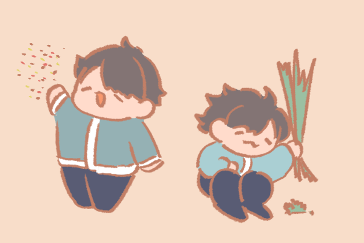
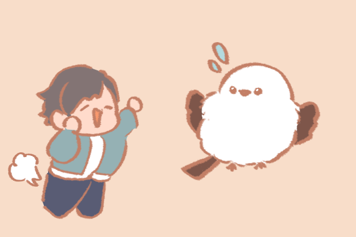
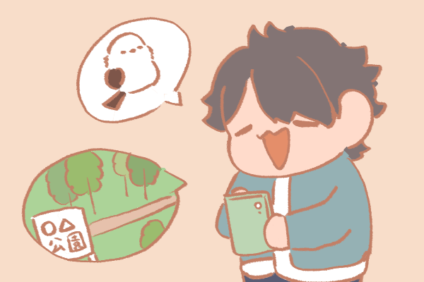

その1 餌づけ・環境に手を加えない
食べ物をもらうとここに来ればご飯がもらえると思って、 野鳥本来の行動をとらなくなっちゃう。周りの環境も、 変化があると危険を感じてその場所には来なくなっちゃうかも。 ぼくたちの生活のために、見たいからといって食べ物をあげない、 環境に手を加えないようにしてね。
その2 近づきすぎない
近づきすぎるとぼくたちのストレスになっちゃう。 もしその近くに巣があったら、親が身の危険を感じて 子育てをやめて巣を捨てちゃうかも。見るときは一定の距離で、 双眼鏡などの道具を使って見てみようね。
その3 場所の詳細な情報を公開しない
「〇〇の看板の近くの木にいた」などの詳細な場所をSNS等で拡散すると、 見ようとする人たちがその場所に集中して周囲の人やぼくらにもストレスが かかっちゃう。詳細な場所の公開は避けてね。